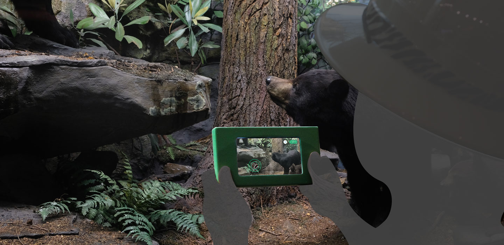
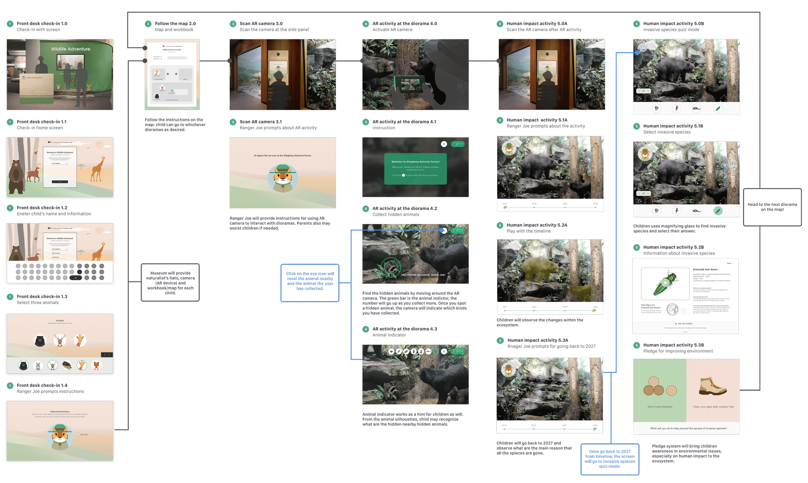

Carnegie Museum of Art: Wildlife Adventure - A New Way to Explore Dioramas
Overview
We design for a system that provides an engaging activity for families to experience dioramas in a new way at Carnegie Museum of Art. We specifically looked into how human impacts influence ecosystem in individual dioramas and how we could educate families to be more aware of environmental issues. The entire project took about a month from scratch to finish, and we wanted to create a system that incorporates both psychical and interactive digital technologies which apply to most of the dioramas in the museum. Due to the short period, we only focus on one particular diorama for addressing our concepts. We decided to tackle Allegheny National Forest diorama and how would invasive species affects the ecosystem as a whole in 15 years.

Challenge
Observation
We observed that there was a limited parent to child engagement in the diorama section at the museum. Through our research and interview, we found that:
Focus
Based on observations and discussions with museum staff and elementary school educators, we decided to focus on 5-11 years old children and utilize:
Process
Design Iteration
To solve the language barrier for most of the travelers who are here for art and design, I brainstormed and articulated my idea to create a multi-functional mobile app to fulfill users needs. I also wanted to promote the island through well-known artists' artworks like Yayoi Kusama's Yellow Pumpkin to attract more visitors to this art island


Dioramas Entry Kiosk
After having a better roadmap for my product, I put my thoughts into the wireframes. By visualizing different ideas, I was able to implement initial ideas to better solutions. The design of the menu button was very intuitive and seamless. It stayed on every screens so users can switch functions by just a tap.


AR and educational timeline activities
After having a better roadmap for my product, I put my thoughts into the wireframes. By visualizing different ideas, I was able to implement initial ideas to better solutions. The design of the menu button was very intuitive and seamless. It stayed on every screens so users can switch functions by just a tap.


Work book
The user, a foreign traveler in this context, should easily find detailed artwork's information by taking photos of an actual object. Seamlessly switching through the navigation and effortlessly get to the museum’s location without asking others. Lastly, voice assistance allows a traveler to search any art related information. As this can happen in any random order, the app’s flow has to be user-friendly, so there are no gaps between users and the product.

User Flow
The user, a foreign traveler in this context, should easily find detailed artwork's information by taking photos of an actual object. Seamlessly switching through the navigation and effortlessly get to the museum’s location without asking others. Lastly, voice assistance allows a traveler to search any art related information. As this can happen in any random order, the app’s flow has to be user-friendly, so there are no gaps between users and the product.

Design
Customized museum journey along with visual characters
Foreigner travelers can easily find detail information by photo capturing actual artworks.

Educational game and pledge system
Seamless navigation experience allows travelers to quickly switching thru the functions.

Interactive AR activity with camera hand-held device
Touring art and culture in Naoshima become easy and efficient.

Personalized workbook
It's an interactive prototype. Have fun!